Document Preview
Information Systems graduate (S.Kom., Cum Laude, GPA 3.76/4.00) who delivers projects end to end. Led AgrimapGIS, a copyright-registered web GIS for the Bandar Lampung City Agriculture Office, from requirements to deployment, and keeps teams and stakeholders aligned through structured documentation and clear follow-up.
As Regional Coordinator of PERMIKOMNAS Region XV Lampung, aligned 11 student associations across 10 campuses and brought in 2 new member associations. Brings retail operations experience from a family minimarket and turns operational needs into structured processes and digital solutions.
A web GIS that lets agricultural activity be mapped, validated, and monitored on one platform. Built for the Bandar Lampung City Agriculture Office, with Rajabasa District as the focus area. Already in use by the agency.
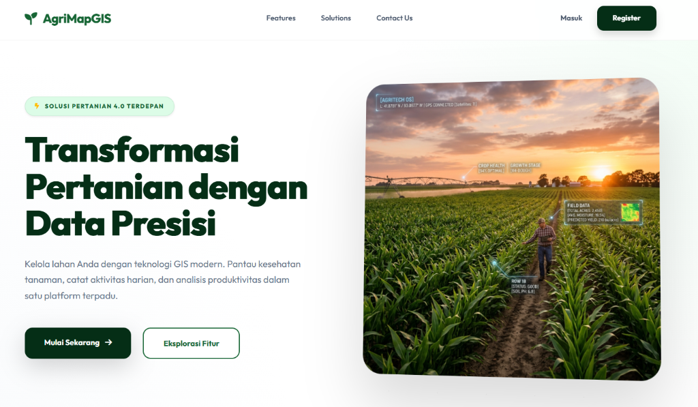
Seven novelty features defined and delivered within the Jan – Jul 2026 timeline without scope creep.
Each phase closes with a verifiable output, ending in usability, accuracy, and expert validation scores.
Requirements, UML models, validation instruments, and the complete thesis were all prepared by me.
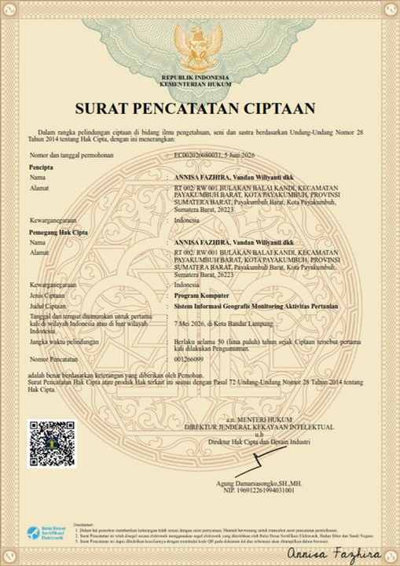
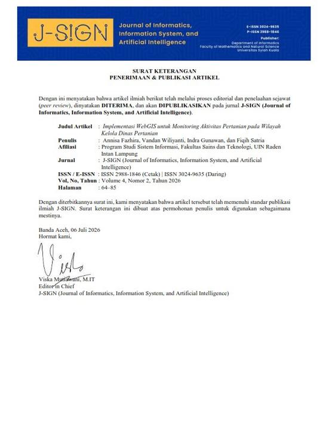
A web application that makes it easier to schedule employee duty rosters (piket) and to monitor whether cleaning duty is carried out, so staff plan and track duty in one centralized place.
Assign employee duty rosters
Staff follow posted duties
Track cleaning completion
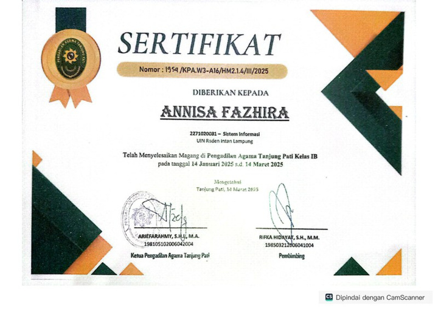
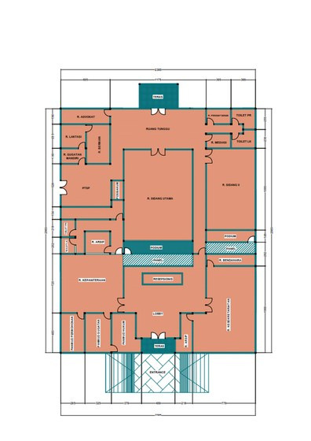
Ground floor, second floor, and outdoor area, drawn in AutoCAD to guide navigation around the office premises.
A map showing the area under the court's responsibility, turning the jurisdiction scope into a clear visual guide.
Diagnosed the hardware fault and repaired the queue machine, restoring self-service registration for visitors.
Resolved hardware, software, and network issues; maintained LAN, Wi-Fi, user credentials, IT inventory, and regular backups.
Regional Secretary (Apr – Aug 2025), then Regional Coordinator (Aug 2025 – Sep 2026).
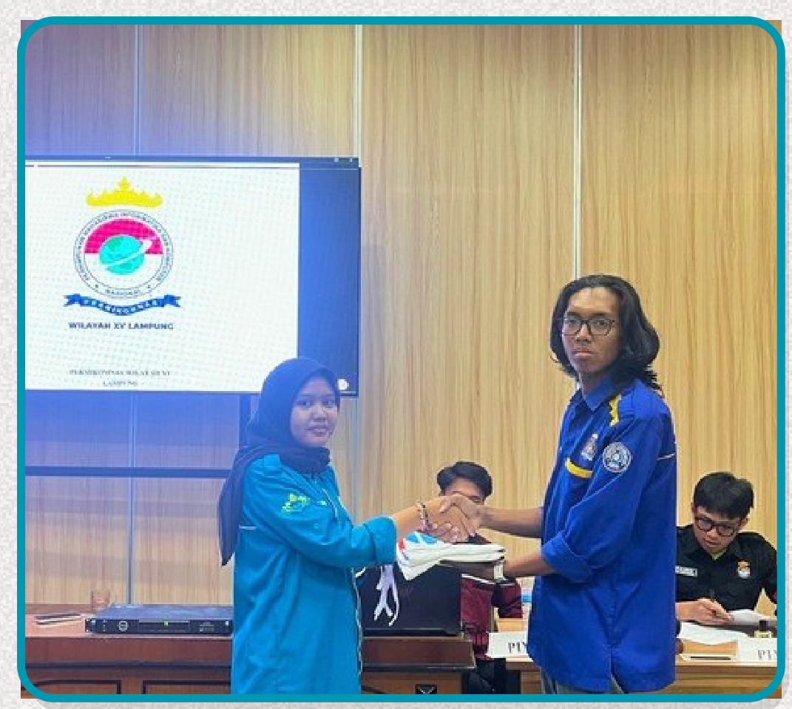
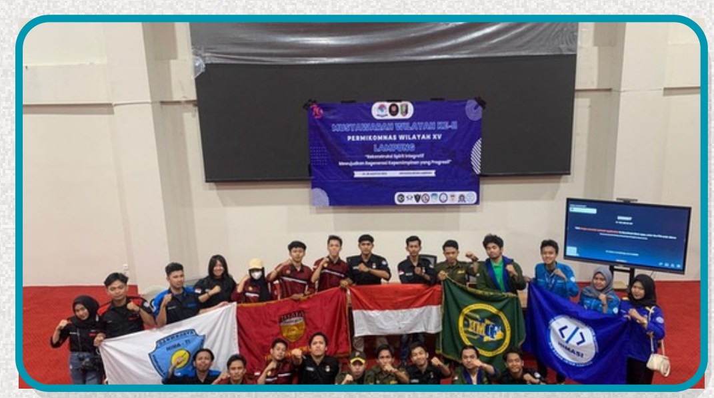
Organizational Management · Sep 2025
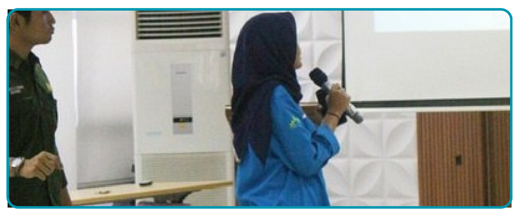
Moderator (2026) · Administrative Staff (2025)
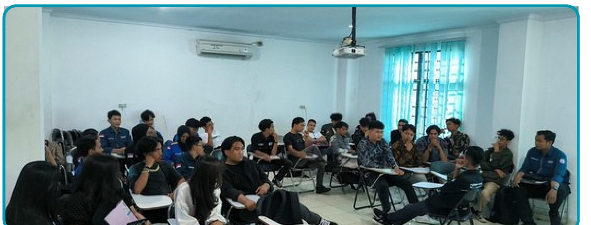
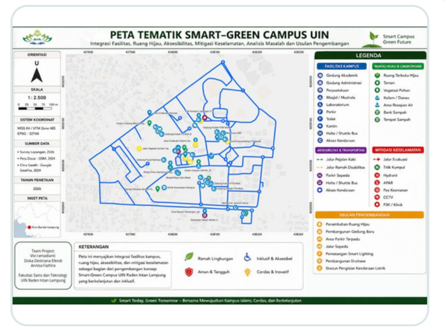
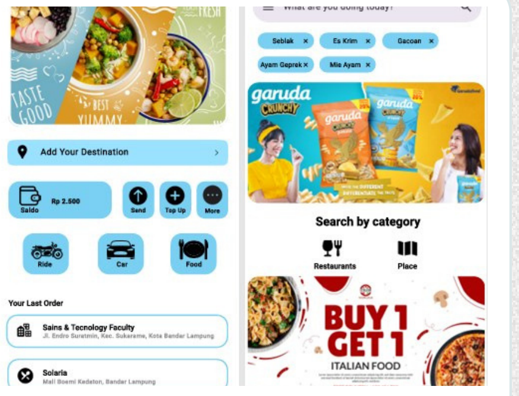
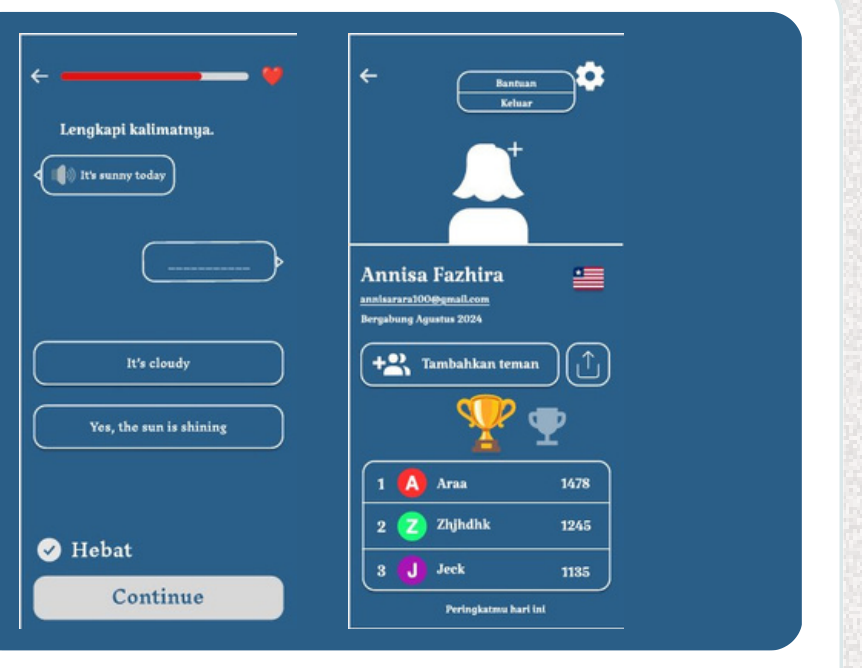
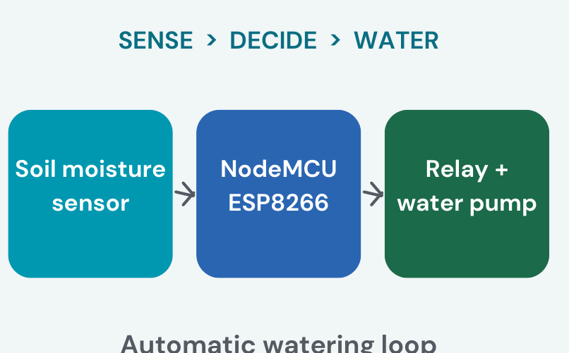
Decide > Water">Experience the interactive ticket workflow, SLA tracking, and IT asset analytics dashboard prototype.
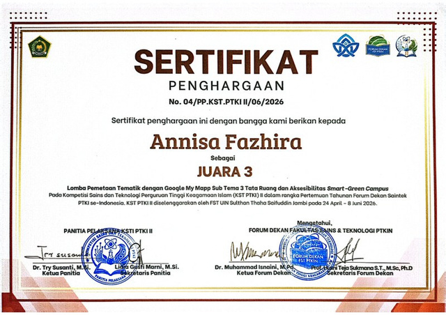
Professional credentials issued in Project Management, Technology Risk, and Systems Strategy. Full verified set available on LinkedIn.
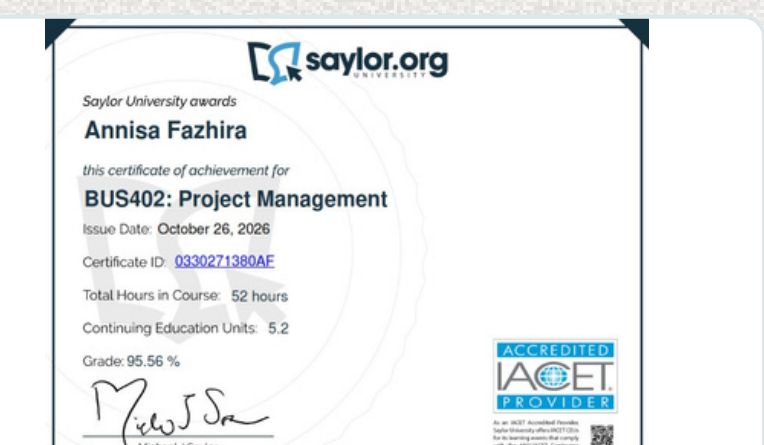
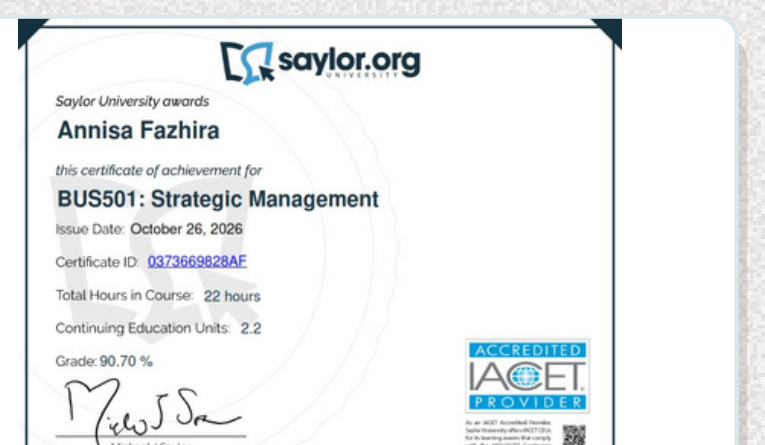
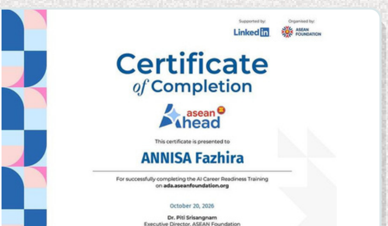
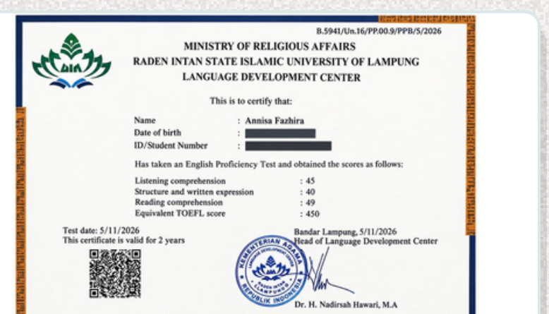
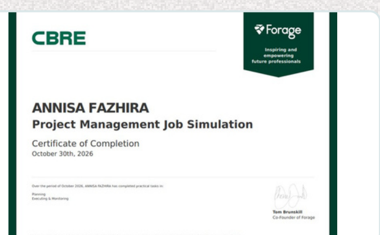
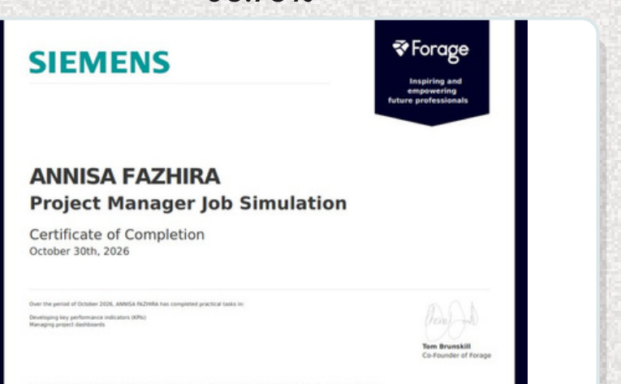
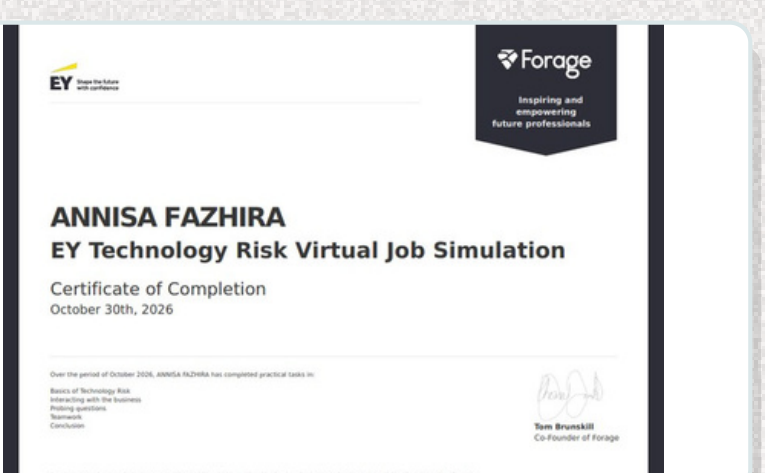
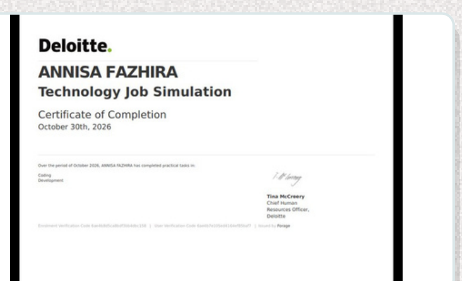
Ready to support project planning, coordination, business development, and documentation with a structured approach.